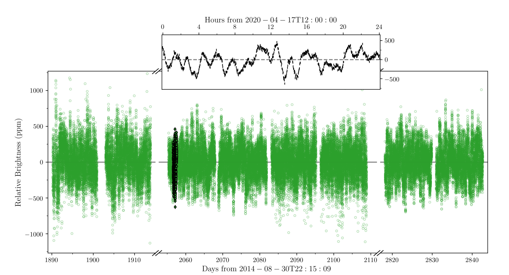
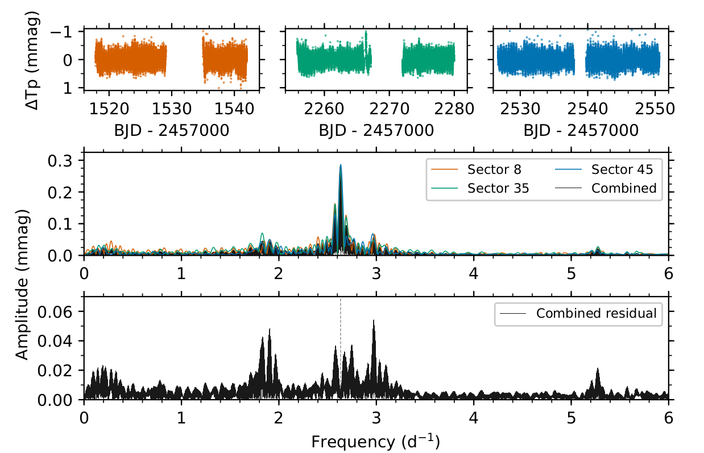
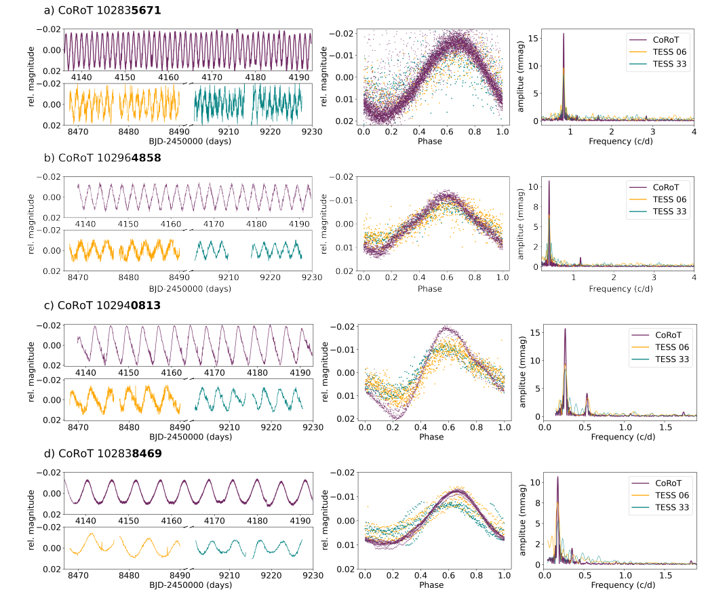

Welcome TESS followers to our latest news bulletin! This week, we are looking at three recent papers from the archive. Enjoy!
Solar-like oscillations in Gamma Cephei A as seen through SONG and TESS (Knudstrup et al. 2023) :
Gamma Cephei is a bright (V = 3.2 mag), nearby (~14 pc) binary system with an orbital period of ~67 years. The primary, Gamma Cephei A, was one of the first stars announced to host an exoplanet (Gamma Cephei Ab, Campbell et al. 1988), which was confirmed 15 years later (Hatzes et al. 2003). Subsequent analysis showed that the planet follows a highly inclined orbit with respect to the binary system. Knudstrup et al. (2023) present an in-depth asteroseismic and orbital analysis of the system aimed at providing a better understanding of its formation and evolution. The authors combine 2-min cadence TESS lightcurves from Sectors 18, 24, 25, and 52 with observations from the SONG network, the Nordic Optical Telescope, and Gaia DR3 data to detect Solar-like oscillations in the red giant primary Gamma Cephei A, and create a combined power spectrum. Knudstrup et al. (2023) use the BASTA framework and detect multiple radial and quadruple modes, as well as a number of mixed dipole moments, and even a potential signal with a period of 50 days. The authors investigate the latter with the assumption that it is due to rotation and note that, if real, it would be consistent with ~13 degrees of stellar inclination – implying that the star and the planet should be either aligned or anti-aligned. Knudstrup et al. (2023) obtain both global seismic parameters, and combine the detected frequencies with the effective temperature, log g, metallicity, and luminosity to derive primary mass of 1.27 MSun, primary radius of 4.74 RSun, and age of 5.7 Gyr. Utilizing the measured radial velocities, the authors also derive a mass of 0.33 MSun for the secondary star (Gamma Cephei B) and 6.6 MEarth for the planet (Gamma Cephei Ab). Thanks to TESS data, Knudstrup et al. (2023) were able to refine the physical and orbital parameters of the Gamma Cephei binary star, one of the first exoplanet host systems.
The unexpected optical and ultraviolet variability of the standard star α Sex (HD 87887 (Monier et al. 2023) :
Alpha Sextantis is a bright standard star (V = 4.5 mag) at a distance of about 86 parsecs and a known variable, with a spectral type of A0III and effective temperature of Teff ~ 10,000 K. Observations from the International Ultraviolet Explorer from 1992 show significant variability both in the mid-UV and in the far-UV regime, as well as in the V-band. As such, it is a prime target for further studies aimed at determining the origin and properties of the detected variability and TESS is ideally-suited to provide the needed observations. Indeed, Monier et al. (2023) scrutinized the 2-min cadence TESS data for potential pulsation signatures. The authors analyzed each of the three Sectors separately (8, 35, and 45) in order to avoid potential issues associated with the properties of the spectral window with respect to the combined lightcurve. Utilizing a discrete Fourier Transform, Monier et al. (2023) detect a clear, dominant frequency of 2.62/day (period of ~9.1 hours) with an amplitude of about 0.3 mmag in all three sectors, along with indications for multiperiodic pulsations in Sector 45 with an amplitude of up to 0.3 mmag and covering a frequency range between 1.8/day and 5.3/day. Capitalizing on archival data from NARVAL, the authors estimate the fundamental properties of Alpha Sextantis as follows: mass M = 2.5 +/- 0.32 MSun, R = 3.07 +/- 0.9 RSun, mean density of 0.13 +/- 0.11 g/cm3, Age = 385+/-77 Myr, and luminosity L = 90+/-52 LSun. Monier et al. (2023) also note that the measured parallax from Gaia should be interpreted with caution given the star is bright, part of a binary system, and the measured astrometric excess noise is ~2 mas. The authors estimate an expected period of fundamental radial pressure mode of P = 9.3+/-4.1 hours, consistent with the measurements. Utilizing TESS data, Monier et al. (2023) were able to detect clear periodicity in the lightcurve of the standard star Alpha Sextantis with a period of about 9 hours, which they attribute to low-radial order p-mode pulsations.
Testing Ultra-low Amplitude Cepheid Candidates in the Galactic Disk by TESS and Gaia (Tarczay-Nehéz et al. 2023) :
Cepheids pulsating at the millimagnitude-level, known as ultra-low amplitude (ULA) Cepheids, are typically considered to be at or near the classical instability strip. Some ULA pulsations in post-AGB stars have been classified as strange modes generally attributed to surface modes that occur at the adiabatic limit and can be also present in classical Cepheids. As a milli-magnitude phenomenon, strange modes are highly challenging to detect and only a few dozen ULA Cepheids in the Milky Way and in the Magellanic Clouds are known. Tarczay-Nehéz et al. (2023) present a detailed investigation of six ULA Cepheids first identified in CoRoT data (CoRoT ID 102835671, 102964858, 102940813, 102838469, 102827671, and 102799143). The authors use TESS FFI lightcurves from Sectors 6 and 33 and archival data, and, despite the fact that the targets are relatively faint (G magnitude between 12.6 and 16), were able to detect low-amplitude variability in four out of the six stars. The corresponding period values obtained from TESS data match those from CoRoT to within 0.001-0.01 days. For the remaining two targets (CoRoT ID 102827671 and 102799143), the combination of high contamination, low signal-to-noise ratio, and for 102799143 the period commensurability with the orbital period of TESS, make robust variability detection highly challenging. Tarczay-Nehéz et al. (2023) assign 102964858 and 102827671 to main-sequence A and K spectral type, and attribute the observed variability to spot-induced rotation. The authors argue that the other four targets are close to the region of slow B pulsators (the blue tip of the Main Sequence) but are likely rotational variables instead of pulsation variables. Additionally, based on the measured times of lightcurve maxima, Tarczay-Nehéz et al. (2023) note that there may be indications for a possible period change in 102838469 with a timescale on the order of 10 years. Capitalizing on TESS data, the authors were able to detect low amplitude variations in four ultra-low amplitude Cepheid candidates – a poorly-understood stellar population – and conclude that none of them reside in the color-magnitude regime of the fundamental or first overtone Cepheids.

Fig. 1: Taken from Knudstrup et al. (2023). TESS lightcurve of Gamma Cephei from Sectors 18, 24, 25, and 52. The inset panel shows a 24-hour interval of the data (marked in black in the main figure), highlighting the detected variability and the measurement uncertainties.

Fig. 2: Taken from Monier et al. (2023). Upper panels: TESS lightcurve of Alpha Sextantis from Sectors 8, 35, and 45 (left to right, respectively). Middle panel: Corresponding amplitude spectra for each sector (colors as indicated on the legend) and for all three sectors combined (black). Lower panel: Residuals after removal of the dominant frequency.

Fig. 3: Taken from Tarczay-Nehéz et al. (2023). Left panels: CoRoT (purple) and TESS (orange and teal) lightcurves of six ultra-low amplitude Cepheids. Middle panels: corresponding phase-folded lightcurves. Left panels: Corresponding power spectra.